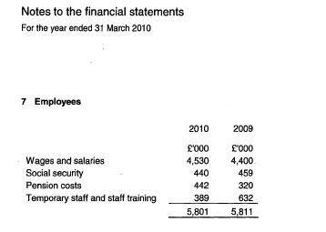
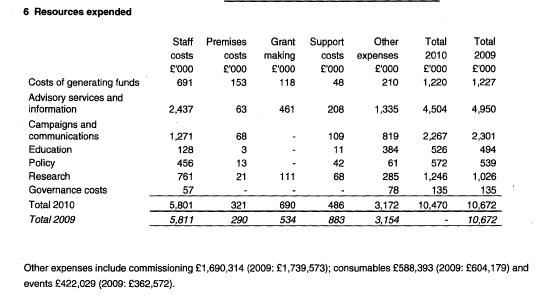
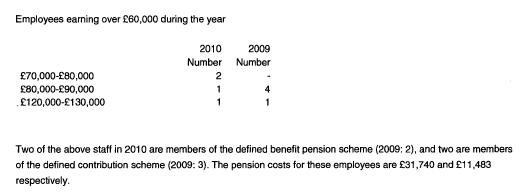
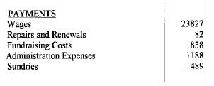

Staff Costs and Details#
We want to capture the staff costs and numbers for each account. These should be captured as an "Other Financial" field at the foot of the standard form.
For SORP accounts:#
todo
We need to add this to the standard template
For accruals accounts that follow the SORP these are reported in a separate section of the notes, outside the main heirarchy of the statement of financial activites.
The total staff costs should be shown in the notes to the accounts, broken down as follows:
Total Staff Costs
- gross wages and salaries
- employer's national insurance costs (sometimes written as social security costs)
- pension costs
There will sometimes also be:
- temporary staff costs
- staff training costs
- other staff costs
Enter all of these totals.
The example below is an extract from the NCVO's accounts:

What you don't need to capture:#
Sometimes there will also be a breakdown of staff costs by activity - e.g a charities spending on "Relief of poverty" may be broken down into "staff costs", "support costs" etc. We do not need to collect this detail.

The pay level of staff with salaries of over £60,000 will also be listed in bands of £10,000. This needs to be captured as a new item under the "Other non-financial" section, with a row for each band.

For Receipts and Payments type accounts:#
Some receipts and payments accounts will list staff costs in their payments. This may be called "Wages" "Staff costs" or similar and probably includes all of the categories of staff cost mentioned above. This information should also be entered as a Staff costs item in the Other financial section.
